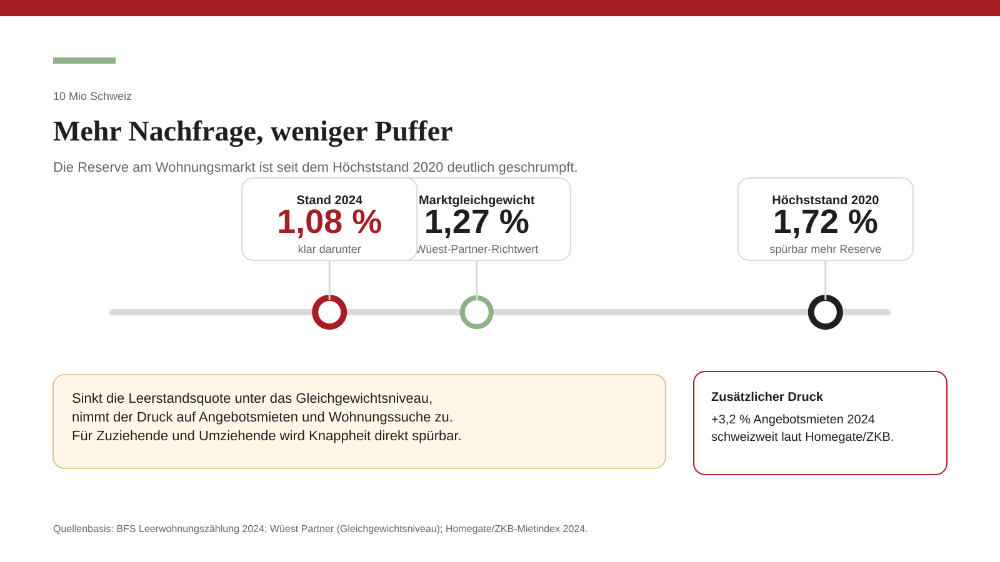
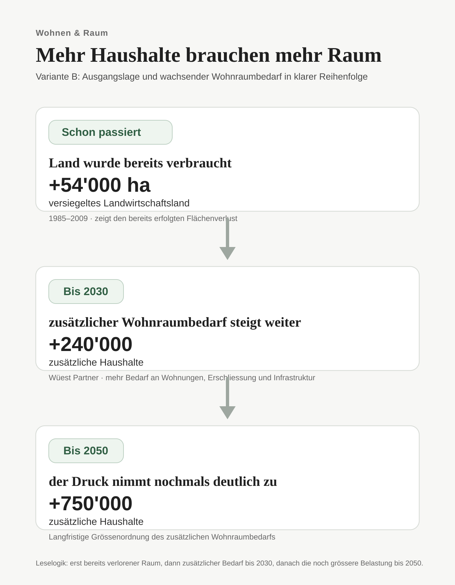

1. Der Wohnungsmarkt hat seine Reserve weitgehend verloren
Am 1. Juni 2024 wurden in der Schweiz 51'974 leerstehende Wohnungen gezählt. Das entspricht einer Leerstandsquote von 1,08 Prozent – dem vierten Rückgang in Folge seit dem Höchststand von 1,72 Prozent im Jahr 2020.
Damit ist die Reserve am Markt weitgehend abgeschmolzen. Laut Wüest Partner liegt das Gleichgewichtsniveau bei rund 1,27 Prozent. Der aktuelle Wert liegt also klar darunter. Das heisst: Der Markt ist nicht einfach angespannt, sondern strukturell zu knapp.
| Indikator | Wert (2024) |
|---|---|
| Leerstehende Wohnungen total | 51'974 |
| Leerstandsquote gesamt | 1,08 % |
| Davon Mietwohnungen leer | 40'423 |
| Rückgang gegenüber 2023 | –5,1 % (–2'791 Einheiten) |
| Rückgang seit Höchststand 2020 | –34 % |
| Gleichgewichtsniveau (Wüest Partner) | ~1,27 % |
Besonders sichtbar wird das in den Zentren und wirtschaftsstarken Kantonen. Zug (0,39 %), Obwalden (0,44 %) und Genf (0,46 %) liegen deutlich unter 0,5 Prozent. Auch Zürich mit 0,56 Prozent lässt praktisch keinen Spielraum mehr. In solchen Märkten genügt schon zusätzliche Nachfrage, um Suchdruck und Preise spürbar weiter nach oben zu treiben.

Quellen: BFS – Leerwohnungszählung 2024 (Medienmitteilung, 10.9.2024) | Wüest Partner – Leerstehende Wohnungen: Neueste Entwicklungen (Sept. 2024)
2. Knappheit schlägt direkt auf Neuvermietungen durch
Die Angebotsmieten – also die Preise für neu ausgeschriebene Wohnungen – stiegen 2024 schweizweit um 3,2 Prozent. Besonders stark war der Anstieg in Luzern, Basel, Lugano, St. Gallen und Zürich. Wer neu mietet oder umzieht, trifft auf einen anderen Markt als jemand, der seit Jahren in derselben Wohnung lebt.
| Stadt / Region | Anstieg Angebotsmieten 2024 | Tendenz |
|---|---|---|
| Luzern | +9,1 % | Stark steigend |
| Basel | +5,8 % | Steigend |
| Lugano | +5,3 % | Steigend |
| St. Gallen | +4,9 % | Steigend |
| Zürich | +4,5 % | Steigend |
| Lausanne | +2,4 % | Moderat |
| Bern | +2,3 % | Moderat |
| Genf | +1,8 % | Moderat |
| Schweiz gesamt | +3,2 % | Steigend |
Genau darin liegt der politische Kern des Problems: Der bestehende Mieterschutz federt für viele Bestandsmieter einen Teil des Drucks ab. Sichtbar wird die Knappheit deshalb vor allem dort, wo Menschen neu in den Markt eintreten müssen – bei jungen Erwachsenen, Familien, Zuziehenden, getrennten Haushalten oder Personen, die aus beruflichen Gründen umziehen.
Die Folge ist eine stille Verschiebung: Nicht alle zahlen sofort mehr. Aber immer mehr Menschen finden nur noch später, kleiner, teurer oder weiter entfernt eine passende Wohnung.
Quellen: Homegate/ZKB-Mietindex 2024 | ImmoMapper – Mietspiegel Schweiz (Jan. 2024) | BWO – Mietpreisentwicklung und Wohnungsmangel (2024)
3. Mehr Menschen heisst nicht automatisch mehr Wohnungen
Die Wohnungsfrage verschärft sich nicht nur, weil mehr Menschen in der Schweiz leben, sondern auch, weil die Zahl der Haushalte schneller wächst als die Bevölkerung. Kleinere Haushalte, Alterung und veränderte Lebensformen erhöhen den Wohnflächenbedarf zusätzlich.
| Zeitraum | Geschätzte neue Haushalte | Quelle / Basis |
|---|---|---|
| Bis 2030 | ca. +240'000 | Wüest Partner 2024 |
| Bis 2050 | ca. +750'000 | Wüest Partner 2024 (BFS-Referenzszenario) |
| 2023 fertiggestellt | ca. 55'000 neue Wohnungen | BFS Baustatistik 2023 |
Wüest Partner rechnet bis 2030 mit rund 240'000 zusätzlichen Haushalten, bis 2050 mit rund 750'000. Das ist wohnungspolitisch entscheidend: Nicht nur Köpfe brauchen Platz, sondern Haushalte. Und diese wachsen in der Schweiz langfristig schneller als die Bevölkerung selbst.
Gleichzeitig hält die Bautätigkeit nicht Schritt. Höhere Baukosten, Finanzierung, Einsprachen, knappe Bauzonen und lange Bewilligungsverfahren bremsen den Neubau. Wo Nachfrage schnell steigt, reagiert das Angebot deshalb zu langsam.

Quellen: Wüest Partner – Bevölkerung und Haushalte: Entwicklung in der Schweiz bis 2050 (Juni 2024) | BFS – Bevölkerungsszenarien 2025–2055 (April 2025)
4. Das Raumplanungsgesetz steuert Fläche – aber nicht die Nachfrage
Das Raumplanungsgesetz soll den Boden haushälterisch nutzen, Baugebiet von Nichtbaugebiet trennen und die Verdichtung nach innen stärken. Das ist wichtig. Aber das RPG löst den Grundkonflikt nicht.
Es steuert, wo gebaut werden soll. Es steuert nicht, wie stark die Nachfrage nach Wohnraum wächst.
Genau hier liegt die Grenze des bestehenden Systems: Wenn Bevölkerung und Haushalte stark zunehmen, stehen am Ende nur zwei Hauptpfade offen – mehr Verdichtung im bestehenden Siedlungsraum oder mehr Druck auf neue Flächen. Beide Wege haben ihren Preis.
Verdichtung bedeutet mehr Wohnungen auf gleicher Fläche, aber auch höhere Bauten, weniger Freiraum, mehr Nutzungskonflikte und mehr Belastung in gewachsenen Quartieren. Ausdehnung nach aussen schafft zusätzlichen Raum, geht aber zulasten von Kulturland, Landschaft und Infrastrukturkosten.
Quellen: ARE – Raumplanungsrecht: RPG 1 und RPG 2 | EspaceSuisse – RPG und Siedlungsentwicklung
5. Der eigentliche Konflikt heisst Raum
Zwischen 1985 und 2009 gingen in der Schweiz rund 54'000 Hektaren Landwirtschaftsland verloren – das entspricht im Durchschnitt etwa einem Quadratmeter pro Sekunde. Seit der RPG-Revision hat sich das Tempo verlangsamt, doch der Grundkonflikt bleibt bestehen: Mehr Haushalte, mehr Wohnungen und mehr Erschliessung brauchen Raum – und davon hat die Schweiz im dicht besiedelten Mittelland nur begrenzt.
Darum ist die Wohnungsfrage nicht nur eine Marktfrage, sondern eine Raumfrage. Sie betrifft nicht nur Mieten, sondern auch Bauzonen, Pendlerdistanzen, Ortsbilder, Kulturland, Infrastruktur und Lebensqualität.
Wer über 10 Millionen Einwohner spricht, spricht deshalb immer auch darüber, wie viel Verdichtung die Schweiz tragen will, wie viel Fläche sie noch verbrauchen will und wie stark sie den Wachstumsdruck politisch steuern will.
Quellen: sanu durabilitas – Nachhaltiger Umgang mit Boden | BFS – Bodennutzung und Arealstatistik | ARE – Raumbeobachtung Schweiz
6. Die Schweiz wohnt bereits unter Druck
Die Schweiz bewegt sich nicht in einen hypothetischen Wohnungsengpass hinein. Sie lebt bereits in einem Markt, der vielerorts kaum noch Reserve hat.
Sinkende Leerstände, steigende Angebotsmieten, wachsende Haushaltszahlen und begrenzter Raum sind keine voneinander getrennten Phänomene. Sie gehören zusammen. Je stärker die Bevölkerung wächst, desto sichtbarer wird dieser Zusammenhang.
Die Wohnungsfrage entscheidet sich nicht erst beim nächsten Bauprojekt. Sie entscheidet sich dort, wo die Schweiz beantwortet, wie viel Wachstum sie raumplanerisch, infrastrukturell und gesellschaftlich überhaupt noch tragen kann.
- Der Leerstand ist seit 2020 vier Jahre in Folge gesunken – auf 1,08 Prozent.
- 1,08 Prozent Leerstand bedeutet: Der Markt hat kaum noch Reserve.
- Steigende Angebotsmieten treffen vor allem jene, die neu suchen oder umziehen müssen.
- Bis 2030 entstehen rund 240'000 zusätzliche Haushalte, bis 2050 rund 750'000.
- Die Wohnungsfrage ist nicht nur ein Preisproblem, sondern ein Konflikt um Raum.
Bundesbehörden
- BFS – Leerwohnungszählung 2024 (Medienmitteilung & Vollbericht PDF)
- BFS – Mietwohnungen | BFS – Bodennutzung und Arealstatistik
- BFS – Bevölkerungsszenarien 2025–2055
- ARE – Raumbeobachtung Schweiz | ARE – Revision RPG 1
- UVEK – Revisionen des RPG
- BWO – Mietpreisentwicklung und Wohnungsmangel (2024)
Weitere Quellen
- Wüest Partner – Leerstehende Wohnungen (Sept. 2024)
- Wüest Partner – Bevölkerung und Haushalte bis 2050 (Juni 2024)
- Homegate/ZKB – Mietpreisentwicklung 2024
- ImmoMapper – Mietspiegel Schweiz (Jan. 2024)
- EspaceSuisse – RPG und Siedlungsentwicklung
- sanu durabilitas – Nachhaltiger Umgang mit Boden
- Bundeskanzlei – Volksinitiative «Nachhaltige Schweizer Bevölkerungsentwicklung»